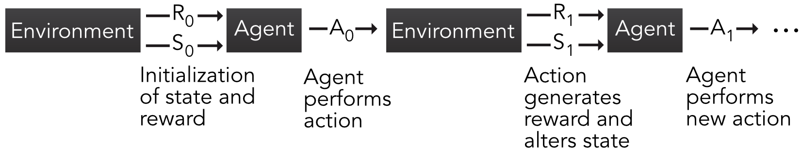

16 强化学习
由于强化学习 (RL) 在ML社区中越来越受欢迎，我们专门用一章来介绍它。仅 2019 年，就有超过 25 篇致力于 RL 的论文以 q:fin（量化金融）分类提交至（或更新）arXiv。交易应用包括 Xiong et al. (2018) 和 Théate and Ernst (2020)。市场微观结构是一个焦点框架（H. Wei et al. (2019)、Ferreira (2020)、Karpe et al. (2020)）.
此外，Sato (2019) 中汇编了基于强化学习的投资组合的早期调查（另请参见 Z. Zhang, Zohren, and Roberts (2020)），并且在 Kolm and Ritter (2019b)、Meng and Khushi (2019)、Charpentier, Elie, and Remlinger (2020) 和 Mosavi et al. (2020) 中讨论了一般金融应用。这再次表明强化学习最近在量化金融界获得了关注。33
虽然强化学习不仅仅是一种特定算法，而是一个框架，但正如我们将要展示的，它在投资组合管理中的有效应用并不简单。对于 RL 算法泛化能力的讨论，我们参考 Packer et al. (2018) 和 D. Ghosh et al. (2021)。
16.1理论框架
16.1.1 总体框架
在本节中，我们将介绍 RL 的核心概念，并相对紧密地遵循以下符号（和布局）： Sutton and Barto (2018) 与 Bertsekas (2017) 一起被广泛认为是该领域的可靠参考。该领域的一个核心工具称为 马尔可夫决策过程（MDP，请参阅 Sutton and Barto (2018) 中的第 3 章）。
MDP 与所有 RL 框架一样，涉及 代理（例如，交易者或投资组合经理）和 环境（例如，金融市场）之间的交互。代理执行可能改变环境状态的 动作 并为每个动作获得奖励（可能是负的）。这个短序列可以重复任意次数，如图 16.1 所示。

图 16.1： 马尔可夫决策过程方案。 R、S 和 A 分别代表奖励、状态和行动。
给定环境状态（\(S_0\)）和奖励（通常是\(R_0=0\)）的初始值，代理执行一项操作（例如，投资某些资产）。这会产生奖励 \(R_1\)（例如回报、利润、夏普比率）以及未来的环境状态 (\(S_1\))。在此基础上，代理执行新的操作并且序列继续。当状态、动作和奖励的集合是有限的时，MDP 在逻辑上被称为 有限。在金融框架中，这有点不现实，我们稍后讨论这个问题。然而，不难想到简化和离散的金融问题。例如，奖励可以是二元的：赢钱还是输钱。在只有一种资产的情况下，行动也可以是双重的：投资与不投资。当资产数量足够小时，可以设定固定的比例，从而产生合理数量的投资组合选择组合等。
我们用有限的 MDP 来追求我们的曝光；它们在文献中最常见，而且它们的正式处理也更简单。 MDP 相对简单，有助于掌握其他 RL 技术的常见概念。与马尔可夫对象的常见情况一样，关键概念是 转移概率：
\[\begin{equation} \tag{16.1} p(s',r|s,a)=\mathbb{P}\left[S_t=s',R_t=r | S_{t-1}=s,A_{t-1}=a \right], \end{equation}\]
这是在时间 \(t\) 达到状态 \(s'\) 并奖励 \(r\) 的概率，条件是处于状态 \(s\) 并在时间 \(t-1\) 执行操作 \(a\)。今后，状态和动作的有限集将用 \(\mathcal{S}\) 和 \(\mathcal{A}\) 表示。 有时，这个概率是对奖励集合求平均，从而得到以下分解： \[\begin{align} \tag{16.2} \sum_r rp(s',r|s,a)&=\mathcal{P}_{ss'}^a \mathcal{R}_{ss'}^a, \quad \text{ where } \\ \mathcal{P}_{ss'}^a &=\mathbb{P}\left[S_t=s' | S_{t-1}=s,A_{t-1}=a \right], \quad \text{ and } \nonumber \\ \mathcal{R}_{ss'}^a &= \mathbb{E}\left[R_t | S_{t-1}=s,S_t=s', A_{t-1}=a \right]. \nonumber \end{align}\]
代理的目标是最大化奖励流的某个函数。该收益通常定义为 \[\begin{align} G_t&=\sum_{k=0}^T\gamma^kR_{t+k+1} \nonumber \\ \tag{16.3} &=R_{t+1} +\gamma G_{t+1}, \end{align}\]
即，它是奖励的折扣版本，其中折扣系数为 \(\gamma \in (0,1]\)。地平线 \(T\) 可能是无限的，这就是最初引入 \(\gamma\) 的原因。假设奖励是有限的，则 \(\gamma=1\) 的无限总和可能会发散。如果奖励不随时间减少，而且没有理由减少，那就是这种情况。 当 \(\gamma <1\) 和奖励有界时，收敛就得到保证。当 \(T\) 有限时，任务称为 情节性的，否则称为 连续的。
在 RL 中，要优化或学习的焦点未知数是 策略 \(\pi\)，它驱动代理的操作。更准确地说，\(\pi(a,s)=\mathbb{P}[A_t=a|S_t=s]\)，即 \(\pi\) 等于在环境状态为 \(s\) 的情况下采取行动 \(a\) 的概率。这意味着行动会受到随机性的影响，就像博弈论中的混合策略一样。虽然这可能看起来令人失望，因为投资者希望确保采取最佳行动，但这也很好地提醒我们，面对随机结果的最佳方法很可能也是随机行动。
最后，为了尝试确定最佳策略，一个关键指标就是所谓的价值函数： \[\begin{equation} \tag{16.4} v_\pi(s)=\mathbb{E}_\pi\left[ G_t | S_t=s \right], \end{equation}\]
其中时间索引 \(t\) 不是很相关，并且在函数的符号中被省略。期望运算符 \(\mathbb{E}[\cdot]\) 下的索引 \(\pi\) 仅指示执行策略 \(\pi\) 时取平均值。值函数简单地等于状态等于 \(s\) 时的平均增益。从财务角度来说，这相当于当市场环境为 \(s\) 时，代理人采取 \(\pi\) 驱动的行动的平均利润。更一般地说，不仅可以以状态为条件，还可以以所采取的行动为条件。因此，我们引入 \(q_\pi\) 动作值函数： \[\begin{equation} \tag{16.5} q_\pi(s,a)=\mathbb{E}_\pi\left[ G_t | S_t=s, \ A_t=a \right]. \end{equation}\]
\(q_\pi\) 函数非常重要，因为它给出了状态和动作固定时的平均增益。因此，如果当前状态已知，那么一个明显的选择是选择 \(q_\pi(s,\cdot)\) 最高的操作。当然，如果已知 \(q_\pi\) 的最佳值，这就是最佳解决方案，但实际情况并非总是如此。可以通过 \(q_\pi\): \(v_\pi(s)=\sum_a \pi(a,s)q_\pi(s,a)\) 轻松访问值函数。
最优 \(v_\pi\) 和 \(q_\pi\) 直接定义为 \[v_*(s)=\underset{\pi}{\max} \, v_\pi(s), \ \forall s\in \mathcal{S}, \quad \text{ and } \quad q_*(s,a) =\underset{\pi}{\max} \, q_\pi(s,a), \ \forall (s,a)\in \mathcal{S}\times \mathcal{A}.\]
如果仅知道 \(v_*(s)\)，则代理必须跨越一组操作并找到那些对于任何给定状态 \(s\) 产生最大值的操作。
找到这些最佳值是一项非常复杂的任务，许多文章致力于解决这一挑战。找到最佳 \(q_\pi(s,a)\) 很困难的一个原因是它一方面取决于两个元素（\(s\) 和 \(a\)），另一方面取决于 \(\pi\)。通常，对于固定策略 \(\pi\)，针对给定的操作、状态和奖励流评估 \(q_\pi(s,a)\) 可能非常耗时。一旦估计出\(q_\pi(s,a)\)，就必须测试和评估新策略\(\pi'\)，以确定它是否比原来的策略更好。 因此，反复寻找好的策略可能需要很长时间。有关策略改进和价值函数更新的更多详细信息，我们推荐 Sutton and Barto (2018) 的第 4 章，该章专门讨论动态规划。
16.1.2 Q-学习
解决查找 \(v_*(s)\) 和 \(q_*(s,a)\) 问题的一个有趣的捷径是消除对策略的依赖。因此，当然不需要迭代改进它。执行此操作所需的核心关系是 \(q_\pi(s,a)\) 满足的所谓贝尔曼方程。我们在下面详细介绍它的推导过程。首先，我们记得 \[\begin{align*} q_\pi(s,a) &= \mathbb{E}_\pi[G_t|S_t=s,A_t=a] \\ &= \mathbb{E}_\pi[R_{t+1}+ \gamma G_{t+1}|S_t=s,A_t=a], \end{align*}\] 其中第二个等式源自 (16.3)。表达式 \(\mathbb{E}_\pi[R_{t+1}|S_t=s,A_t=a]\) 可以进一步分解。由于期望超过 \(\pi\)，我们需要总结所有可能的操作 \(a'\) 和状态 \(s'\) 并诉诸 \(\pi(a',s')\)。此外，概率 \(p(s',r|s,a)=\mathbb{P}\left[S_{t+1}=s',R_{t+1}=r | S_t=s,A_t=a \right]\) 的 \(s'\) 和 \(r\) 参数的总和可以访问随机对 \((S_{t+1},R_{t+1})\) 的分布，以便最终 \(\mathbb{E}_\pi[R_{t+1}|S_t=s,A_t=a]=\sum_{a', r,s'}\pi(a',s')p(s',r|s,a) r\)。类似的推理适用于 \(q_\pi\) 的第二部分，并且： \[\begin{align} q_\pi(s,a) &=\sum_{a',r, s'}\pi(a',s')p(s',r|s,a) \left[ r+\gamma \mathbb{E}_\pi[ G_{t+1}|S_t=s',A_t=a']\right] \nonumber \\ \tag{16.6} &=\sum_{a',r,s'}\pi(a',s')p(s',r|s,a) \left[ r+\gamma q_\pi(s',a')\right]. \end{align}\]
该方程将 \(q_\pi(s,a)\) 从可从 \((s,a)\) 访问的状态和动作 \((s',a')\) 连接到未来 \(q_\pi(s',a')\)。
值得注意的是，方程 (16.6) 对于最优动作值函数 \(q_*=\underset{\pi}{\max} \, q_\pi(s,a)\) 也成立：
\[\begin{align} q_*(s,a) &= \underset{a'}{\max} \sum_{r,s'}p(s',r|s,a) \left[ r+\gamma q_*(s',a')\right], \\ &= \mathbb{E}_{\pi^*}[r|s,a]+ \gamma \, \sum_{r,s'}p(s',r|s,a) \left( \underset{a'}{\max} q_*(s',a') \right) \tag{16.7} \end{align}\]
，因为一个最优策略是对于给定状态 \(s\) 以及所有可能的动作 \(a\) 而言最大化 \(q_\pi(s,a)\) 的策略。该表达式是强化学习中称为 \(Q\) 学习的基石算法的核心（Watkins and Dayan (1992) 中概述了收敛的形式证明）。在\(Q\)-学习中，状态-行动函数不再依赖于策略，而是用大写\(Q\)书写。过程如下：
初始化所有状态 \(s\) 和操作 \(a\) 的值 \(Q(s,a)\)。对于每个情节：
\[ (\textbf{QL}) \quad \left\{
\begin{array}{l}
\text{0. Initialize state } S_0 \text{ and for each iteration } i \text{ until the end of the episode;} \\
\text{1. observe state } s_i; \\
\text{2. perform action } a_i \text{(depending on } Q); \\
\text{3. receive reward }r_{i+1} \text{ and observe state } s_{i+1}; \\
\text{4. Update } Q \text{ as follows: }
\end{array} \right.\]
\[\begin{equation} \tag{16.8} Q_{i+1}(s_i,a_i) \longleftarrow Q_i(s_i,a_i) + \eta \left(\underbrace{r_{i+1}+\gamma \, \underset{a}{\max} \, Q_i(s_{i+1},a)}_{\text{echo of Bellman eq.}}-Q_i(s_i,a_i) \right) \end{equation}\]
此更新规则起作用的根本原因可以与收缩映射的不动点定理联系起来。如果函数\(f\)满足\(|f(x)-f(y)|< \delta |x-y|\)（Lipshitz连续性），则可以通过\(z \leftarrow f(z)\)迭代获得满足\(f(z)=z\)的不动点\(z\)。该更新规则收敛于固定点。方程 (16.7) 可以使用类似的原理来求解，只不过学习率 \(\eta\) 减慢了学习过程，但在技术上确保了技术假设下的收敛。
更一般地说，(16.8) 具有强化学习中广泛使用的形式，如 Sutton and Barto (2018) 的方程 (2.4) 所示： \[\begin{equation} \tag{16.9} \text{New estimate} \leftarrow \text{Old estimate + Step size (}i.e., \text{ learning rate)} \times (\text{Target - Old estimate}), \end{equation}\]
其中最后一部分可以被视为错误项。因此，从旧的估计开始，新的估计朝着“正确”（或寻求的）方向前进，以折扣项为模，确保该方向的幅度不会太大。 (16.8) 中的更新规则通常被称为“时间差异”学习，因为它是由 \(t+1\)（目标）时间已知的估计与 \(t\) 时间已知的估计所产生的改进驱动的。
Q 学习序列 (QL) 的一个重要步骤是选择动作 \(a_i\) 的第二步。在强化学习中，最好的算法结合了两个特征：利用 和 探索。利用是指机器利用当前可处理的信息来选择下一步行动。在这种情况下，对于给定状态 \(s_i\)，它选择使预期奖励 \(Q_i(s_i,a_i)\) 最大化的操作 \(a_i\)。虽然显而易见，但如果当前函数 \(Q_i\) 距离 真实 \(Q\) 相对较远，则此选择不是最佳选择。重复局部最优策略可能会支持有限数量的操作，这将略微提高 \(Q\) 函数的准确性。
为了收集来自尚未经过太多测试的操作的新信息（但可能会产生更高的奖励），需要进行探索。这是随机选择操作 \(a_i\) 的情况。结合这两个概念的最常见方法称为 \(\epsilon\) - 贪婪探索。操作 \(a_i\) 根据以下条件分配：
\[\begin{equation} \tag{16.10} a_i=\left\{ \begin{array}{c l} \underset{a}{\text{argmax}} \ Q_i(s_i,a) & \text{ with probability } 1-\epsilon \\ \text{randomly (uniformly) over } \mathcal{A} & \text{ with probability } \epsilon \end{array}\right. . \end{equation}\]
因此，算法以 \(\epsilon\) 的概率进行探索，并以 \(1-\epsilon\) 的概率利用当前对预期奖励的了解并选择最佳操作。由于所有动作被选择的概率不为零，因此该策略被称为“软”。事实上，那么最佳动作的选择概率等于 \(1-\epsilon(1-\text{card}(\mathcal{A})^{-1})\)，而所有其他动作的选择概率为 \(\epsilon/\text{card}(\mathcal{A})\)。
16.1.3 SARSA
在 \(Q\)-学习中，算法寻求找到最优策略的动作价值函数。因此，选择操作所遵循的策略与（通过 \(Q\)）学习到的策略不同。此类算法称为 离策略。 在策略 算法寻求通过根据策略 \(\pi\) 持续行动来改进动作价值函数 \(q_\pi\) 的估计。在策略学习的一个典型例子是 SARSA 方法，它需要两个连续的状态和动作 SARSA。下面介绍五元组 \((S_t,A_t,R_{t+1}, S_{t+1}, A_{t+1})\) 的处理方式。
\(Q\)学习和SARSA的主要区别在于更新规则。在 SARSA 中，它由下式给出： \[\begin{equation} \tag{16.11} Q_{i+1}(s_i,a_i) \longleftarrow Q_i(s_i,a_i) + \eta \left(r_{i+1}+\gamma \, Q_i(s_{i+1},a_{i+1})-Q_i(s_i,a_i) \right) \end{equation}\]
改进仅来自基于新状态和动作（\(s_{i+1},a_{i+1}\)）的 局部 点 \(Q_i(s_{i+1},a_{i+1})\)，而在 \(Q\) 学习中，它来自于所有可能的动作，其中仅保留最好的动作 \(\underset{a}{\max} \, Q_i(s_{i+1},a)\)。预计
SARSA 的一个更强大但计算要求更高的版本是期望 SARSA，其中目标 \(Q\) 函数对所有操作进行平均： \[\begin{equation} \tag{16.12} Q_{i+1}(s_i,a_i) \longleftarrow Q_i(s_i,a_i) + \eta \left(r_{i+1}+\gamma \, \sum_a \pi(a,s_{i+1}) Q_i(s_{i+1},a) -Q_i(s_i,a_i) \right) \end{equation}\]
预期 SARSA 的波动性小于 SARSA，因为后者受到 \(a_{i+1}\) 随机选择的强烈影响。在预期的 SARSA 中，平均值使学习过程更加顺畅。
16.2 维度诅咒
让我们首先回顾一下，强化学习是一个不与特定算法关联的框架。事实上，不同的工具可以很好地共存于 RL 任务中（AlphaGo 结合了树方法和神经网络，参见 Silver et al. (2016)）。尽管如此，任何强化学习尝试都将始终依赖于三个关键概念：状态、动作和奖励。在因子投资中，它们相当容易识别，尽管总有解释的空间。行动显然是由投资组合构成来定义的。状态可以被视为描述经济的当前值：作为一阶近似，可以假设特征级别履行这一角色（可能以宏观经济数据为条件或补充）。奖励也更加直接。回报或任何相关绩效指标34 都可以算作奖励。
一个主要问题在于状态和动作的维度。假设没有杠杆作用（没有负权重），动作在单纯形上取值 \[\begin{equation} \tag{16.13} \mathbb{S}_N=\left\{ \mathbf{x} \in \mathbb{R}^N\left|\sum_{n=1}^Nx_n=1, \ x_n\ge 0, \ \forall n=1,\dots,N \right.\right\} \end{equation}\] 假设所有特征都已统一，则它们的空间为 \([0,1]^{NK}\)。不用说，这两个空间的尺寸在数字上都是不切实际的。
解决这个问题的一个简单方法是离散化：将每个空间划分为少量类别。有些作者确实采取了这条路线。在 S. Y. Yang, Yu, and Almahdi (2018) 中，状态空间根据波动性被离散化为三个值，并且动作也被分为三类。 Bertoluzzo and Corazza (2012)、Xiong et al. (2018) 和 Taghian, Asadi, and Safabakhsh (2020) 也选择三种可能的操作（买入、持有、卖出）。在 Almahdi and Yang (2019) 中，学习器预计会产生买入或做空的二元信号。 Garcı́a-Galicia, Carsteanu, and Clempner (2019) 考虑更大的状态空间（8 个元素），但将动作集限制为 3 个选项。 35 在状态空间方面，所有文章都假设经济状况由价格（或回报）决定。
这些方法的一个重大限制是它们所暗示的显着简化。当投资多种资产时，现实的离散化在数值上是很棘手的。事实上，将单位间隔分割为 \(h\) 点会产生 \(h^{NK}\) 种特征值可能性。权重组合的选项数量随着 \(N\) 呈指数级增加。举个例子：10 只股票的 10 个特征的 10 个可能值会产生 \(10^{100}\) 排列。
上述问题当然不仅限于投资组合构建。已经提出了许多解决方案来解决连续空间中的马尔可夫决策过程。例如，我们参考 Powell and Ma (2011) 中的第 4 节来回顾早期方法（外部财务）。
这种维数灾难伴随着训练数据的基本问题。可以想到两种选择：市场数据与模拟。在给定的受控样本生成器下，很难想象该算法会击败最大化给定效用函数的解决方案。如果有的话，它应该在固定数据生成过程下收敛到静态最优解（例如，参见 Chaouki et al. (2020) 交易任务），顺便说一句，这是一个非常强的建模假设。
这使得市场数据成为首选解决方案，但即使使用大型数据集，也几乎没有机会覆盖上述所有（操作、状态）组合。基于特征的数据集的深度可以贯穿数十年的月度数据，这意味着最多数百个时间戳。到目前为止，这太有限了，无法实现可靠的学习过程。总是可以生成合成数据（如 Yu et al. (2019) 中），但尚不清楚这是否会切实提高算法的性能。
16.3 策略梯度
16.3.1 原理
除了动作和状态空间的离散化之外，一个强大的技巧是 参数化。当 \(a\) 和 \(s\) 可以取离散值时，必须为所有对 \((a,s)\) 计算动作值函数，这可能非常麻烦。规避这个问题的一个优雅方法是假设该策略是由数量相对较少的参数驱动的。然后，学习过程的重点是优化这组参数 \(\boldsymbol{\theta}\)。然后我们将 \(\pi_{\boldsymbol{\theta}}(a,s)\) 写为在状态 \(s\) 中选择动作 \(a\) 的概率。定义 \(\pi_{\boldsymbol{\theta}}(a,s)\) 的一种直观方法是采用 soft-max 形式： \[\begin{equation} \tag{16.14} \pi_{\boldsymbol{\theta}}(a,s) = \frac{e^{\boldsymbol{\theta}'\textbf{h}(a,s)}}{\sum_{b}e^{\boldsymbol{\theta}'\textbf{h}(b,s)}}, \end{equation}\] 其中函数 \(\textbf{h}(a,s)\) 的输出与 \(\boldsymbol{\theta}\) 具有相同的维度，称为表示 \((a,s)\) 对的特征向量。通常，\(\textbf{h}\) 很可能是一个简单的神经网络，具有两个输入单元和等于 \(\boldsymbol{\theta}\) 长度的输出维度。
\(\pi_{\boldsymbol{\theta}}\) 所需的一个属性是它相对于 \(\boldsymbol{\theta}\) 是可微的，以便可以通过某种梯度方法改进 \(\boldsymbol{\theta}\)。关于策略梯度的最简单和直观的结果是在情景任务（有限视野）的情况下已知的，其寻求最大化平均增益 \(\mathbb{E}_{\boldsymbol{\theta}}[G_t]\) ，其中增益在方程 (16.3) 中定义。期望是根据依赖于 \(\boldsymbol{\theta}\) 的特定策略计算的，这就是我们使用简单下标的原因。一个核心结果是所谓的策略梯度定理，该定理指出
\[\begin{equation} \tag{16.15} \nabla \mathbb{E}_{\boldsymbol{\theta}}[G_t]=\mathbb{E}_{\boldsymbol{\theta}} \left[G_t\frac{\nabla \pi_{\boldsymbol{\theta}}}{\pi_{\boldsymbol{\theta}}} \right]. \end{equation}\]
然后该结果可用于 梯度上升：当寻求最大化数量时，参数变化必须向上：
\[\begin{equation} \tag{16.16} \boldsymbol{\theta} \leftarrow \boldsymbol{\theta} + \eta \nabla \mathbb{E}_{\boldsymbol{\theta}}[G_t]. \end{equation}\]
这个简单的更新规则称为 REINFORCE 算法。对这个简单想法的一个改进是添加一个基线，我们参考 Sutton and Barto (2018) 的第 13.4 节了解有关此主题的详细说明。
16.3.2 扩展
REINFORCE 的一个流行扩展是所谓的 Actor-Critic（AC，行动者-评论家）方法，它将策略梯度与 \(Q\)- 或 \(v\)- 学习相结合。 AC 算法可以被视为策略梯度和 SARSA 之间的某种混合。一个核心要求是状态值函数 \(v(\cdot)\) 是某个参数向量 \(\textbf{w}\) （通常被视为神经网络）的可微函数。那么更新规则就是
\[\begin{equation} \tag{16.17} \boldsymbol{\theta} \leftarrow \boldsymbol{\theta} + \eta \left(R_{t+1}+\gamma v(S_{t+1},\textbf{w})-v(S_t,\textbf{w}) \right)\frac{\nabla \pi_{\boldsymbol{\theta}}}{\pi_{\boldsymbol{\theta}}}, \end{equation}\] 但诀窍是向量 \(\textbf{w}\) 也必须更新。行动者对应策略端，负责驱动决策；评论家对应价值函数端，用来评估行动者的表现。随着学习的进展（每次更新两组参数），双方都会进步。确切的算法公式有点长，我们参考 Sutton and Barto (2018) 中的第 13.5 节来了解 AC 的精确步骤顺序。
Aboussalah and Lee (2020) 中概述了参数策略的另一个有趣的应用。在他们的文章中，作者定义了基于循环神经网络的交易策略。因此，本例中的参数 \(\boldsymbol{\theta}\) 包含网络中的所有权重和偏差。
参数策略的另一个有利特征是它们与连续的操作集兼容。除了 (16.14) 形式之外，还有其他方法来塑造 \(\pi_{\boldsymbol{\theta}}\)。如果 \(\mathcal{A}\) 是 \(\mathbb{R}\) 的子集，并且 \(f_{\boldsymbol{\Omega}}\) 是参数为 \(\boldsymbol{\Omega}\) 的密度函数，则 \(\pi_{\boldsymbol{\theta}}\) 的候选形式为
\[\begin{equation} \tag{16.18} \pi_{\boldsymbol{\theta}} = f_{\boldsymbol{\Omega}(s,\boldsymbol{\theta})}(a), \end{equation}\] 其中参数 \(\boldsymbol{\Omega}\) 依次是状态和底层（二阶）参数 \(\boldsymbol{\theta}\) 的函数。
虽然高斯分布（参见 Sutton and Barto (2018) 中的第 13.7 节）通常是首选，但它们需要进行一些处理才能位于单位间隔内。获得此类值的一种简单方法是将正态累积分布函数应用于输出。在H. Wang and Zhou (2019)中，从理论上探讨了多元高斯策略，但它假设权重没有限制。
一些自然参数分布作为替代方案出现。如果只交易一种资产，则可以使用伯努利分布来确定是否购买该资产。如果有无风险资产可用，则贝塔分布提供更大的灵活性，因为投资于风险资产的比例值跨越整个区间；剩余的可以投资于安全资产。当许多资产被交易时，由于预算限制，事情变得更加复杂。狄利克雷分布是一种理想的候选分布，因为它是在单纯形上定义的（参见方程 (16.13)）： \[f_{\boldsymbol{\alpha}}(w_1,\dots,w_n)=\frac{1}{B(\boldsymbol{\alpha})}\prod_{n=1}^Nw_n^{\alpha_n-1},\] 其中 \(B(\boldsymbol{\alpha})\) 是多项式 beta 函数： \[B(\boldsymbol{\alpha})=\frac{\prod_{n=1}^N\Gamma(\alpha_n)}{\Gamma\left(\sum_{n=1}^N\alpha_n \right)}.\]
如果我们设置\(\pi=\pi_{\boldsymbol{\alpha}}=f_{\boldsymbol{\alpha}}\)，则可以通过\({\boldsymbol{\alpha}}\)以线性形式对因素或特征的联系进行编码： \[\begin{equation} (\textbf{F1}) \quad \alpha_{n,t}=\theta_{0,t} + \sum_{k=1}^K \theta_{t}^{(k)}x_{t,n}^{(k)}, \end{equation}\] 这是非常容易处理的，但对于 \(\theta_{k,t}\) 的某些值可能会违反 \(\alpha_{n,t}>0\) 的条件。事实上，在学习过程中，\(\boldsymbol{\theta}\) 的更新可能会产生 \(\boldsymbol{\alpha}_t\) 可行集合之外的值。在这种情况下，可以诉诸在线学习中广泛使用的技巧（例如，参见 Hoi et al. (2018) 中的 2.3.1 节）。这个想法只是找到最接近算法建议的可接受的解决方案。如果我们将 \(\boldsymbol{\theta}^*\) 称为给定算法的更新规则的结果，那么最接近的可行向量是 \[\begin{equation} \boldsymbol{\theta}= \underset{\textbf{z} \in \Theta(\textbf{x}_t)}{\min} ||\boldsymbol{\theta}^*-\textbf{z}||^2, \end{equation}\] 其中 \(||\cdot||\) 是欧几里得范数，\(\Theta(\textbf{x}_t)\) 是可行集，即使得 \(\alpha_{n,t}=\theta_{0,t} + \sum_{k=1}^K \theta_{t}^{(k)}x_{t,n}^{(k)}\) 均为非负的向量 \(\boldsymbol{\theta}\) 的集合。
策略形式的第二个选项 \(\pi^2_{\boldsymbol{\theta}_t}\) 稍微复杂一些，但始终有效（即具有正 \(\alpha_{n,t}\) 值）： \[\begin{equation} (\textbf{F2}) \quad \alpha_{n,t}=\exp \left(\theta_{0,t} + \sum_{k=1}^K \theta_{t}^{(k)}x_{t,n}^{(k)}\right), \end{equation}\] 这只是第一个版本的指数。通过一些代数，可以推导出策略梯度。策略 \(\pi^j_{\boldsymbol{\theta}_t}\) 由上面的方程 \((\textbf{Fj})\) 定义。让 \(\digamma\) 表示二伽玛函数。让 \(\textbf{1}\) 表示所有 1 的 \(\mathbb{R}^N\) 向量。我们有 \[\begin{align*} \frac{\nabla_{\boldsymbol{\theta}_t} \pi^1_{\boldsymbol{\theta}_t}}{\pi^1_{\boldsymbol{\theta}_t}}&= \sum_{n=1}^N \left( \digamma \left( \textbf{1}'\textbf{X}_t\boldsymbol{\theta}_t \right) - \digamma(\textbf{x}_{t,n}\boldsymbol{\theta}_t) + \ln w_n \right) \textbf{x}_{t,n}' \\ \frac{\nabla_{\boldsymbol{\theta}_t} \pi^2_{\boldsymbol{\theta}_t}}{\pi^2_{\boldsymbol{\theta}_t}}&= \sum_{n=1}^N \left( \digamma \left( \textbf{1}'e^{\textbf{X}_{t}\boldsymbol{\theta}_t} \right) - \digamma(e^{\textbf{x}_{t,n}\boldsymbol{\theta}_t}) + \ln w_n \right) e^{\textbf{x}_{t,n}\boldsymbol{\theta}_t} \textbf{x}_{t,n}' \end{align*}\] 其中 \(e^{\textbf{X}}\) 是矩阵 \(\textbf{X}\) 的按元素指数。
然后可以通过直接采样或使用分布平均值 \((\textbf{1}'\boldsymbol{\alpha})^{-1}\boldsymbol{\alpha}\) 进行分配。最后，技术说明：狄利克雷分布只能用于小型投资组合，因为对于较大的 \(N\) 值（例如，高于 50），密度的缩放常数在数值上变得难以处理。关于这个想法的更多细节在 André and Coqueret (2020) 中列出。
16.4 简单示例
16.4.1 通过模拟进行 Q 学习
为了说明上述问题的要点，我们提出了 \(Q\)-learning 的两种实现方式。为简单起见，第一个基于模拟。这有助于在简化的框架中理解学习过程。我们考虑两种资产：一种有风险，一种无风险，回报为零。风险过程的回报遵循一阶自回归模型 (AR(1))：\(r_{t+1}=a+\rho r_t+\epsilon_{t+1}\) 以及 \(|\rho|<1\) 和 \(\epsilon\) 遵循方差为 \(\sigma^2\) 的标准白噪声。在实践中，个体（每月）回报很少是自相关的，但调整自相关有助于了解算法是否正确学习（参见下面的练习）。
该环境仅包含观察过去的返回 \(r_t\)。由于我们寻求估计 \(Q\) 函数，因此我们需要离散化该状态变量。最简单的选择是使用二元变量：如果 \(r_t<0\) 则等于 -1（负），如果 \(r_t\ge 0\) 则等于 +1（正）。这些行动按投资于风险资产的数量进行总结。它可以取 5 个值：0（无风险投资组合）、0.25、0.5、0.75 和 1（完全投资于风险资产）。例如，这与 Pendharkar and Cusatis (2018) 中的选择相同。
用于强化学习的 R 库的情况出人意料地稀疏。我们求助于 强化学习 包，它具有 \(Q\) 学习的直观实现（另一个选项是 强化学习 包）。它需要一个包含通常输入的数据集：状态、动作、奖励和后续状态。我们首先模拟回报：它们驱动状态和奖励（投资组合收益率）。动作是随机采样的。从技术上讲，包的主要功能要求状态和操作是字符类型。数据构建在下面的块中。
library(ReinforcementLearning) # Package for RL
set.seed(42) # Fixing the random seed
n_sample <- 10^5 # Number of samples to be generated
rho <- 0.8 # Autoregressive parameter
sd <- 0.4 # Std. dev. of noise
a <- 0.06 * rho # Scaled mean of returns
data_RL <- tibble(returns = a/rho + arima.sim(n = n_sample, # Returns via AR(1) simulation
list(ar = rho),
sd = sd),
action = round(runif(n_sample)*4)/4) %>% # Random action (portfolio)
mutate(new_state = if_else(returns < 0, "neg", "pos"), # Coding of state
reward = returns * action, # Reward = portfolio return
state = lag(new_state), # Next state
action = as.character(action)) %>%
na.omit() # Remove one missing state
data_RL %>% head() # Show first lines## # A tibble: 6 × 5
## returns action new_state reward state
## <dbl> <chr> <chr> <dbl> <chr>
## 1 -0.474 0.5 neg -0.237 neg
## 2 -0.185 0.25 neg -0.0463 neg
## 3 0.146 0.25 pos 0.0364 neg
## 4 0.543 0.75 pos 0.407 pos
## 5 0.202 0.75 pos 0.152 pos
## 6 0.376 0.25 pos 0.0940 posQ-学习算法的实现中有3个参数：
- \(\eta\)，是更新方程 (16.8) 中的学习率。在 强化学习 中，编码为 alpha;
- \(\gamma\)，奖励的折扣率（也如公式 (16.8) 所示）；
- 和 \(\epsilon\)，控制探索与利用的速率（参见公式 (16.10)）。
control <- list(alpha = 0.1, # Learning rate
gamma = 0.7, # Discount factor for rewards
epsilon = 0.1) # Exploration rate
fit_RL <- ReinforcementLearning(data_RL, # Main RL function
s = "state",
a = "action",
r = "reward",
s_new = "new_state",
control = control)
print(fit_RL) # Show the output## State-Action function Q
## 0.25 0 1 0.75 0.5
## neg 0.2473169 0.4216894 0.1509653 0.1734538 0.229004
## pos 1.0721669 0.7561417 1.4739050 1.1214795 1.045047
##
## Policy
## neg pos
## "0" "1"
##
## Reward (last iteration)
## [1] 2588.659输出显示 Q 函数，该函数自然取决于状态和操作。当状态为负时，大风险仓位（行动等于 0.75 或 1.00）与最小平均奖励相关，而小仓位产生最高平均奖励。当状态为正时，最大分配的平均奖励最高。这两种情况下的回报几乎都是风险资产投资比例的单调函数。因此，算法（即策略）的建议是在积极状态下充分投资，在消极状态下避免投资。考虑到基本过程的正自相关，这确实有道理。
基本上，该算法只是了解到正（分别 负）回报更有可能跟随正（分别.负）回报。虽然这有点让人放心，但绝不令人印象深刻，而且更简单的工具也会产生类似的结论和指导。
16.4.2 利用市场数据进行 Q 学习
第二个应用程序基于金融数据集。为了降低问题的维度，我们假设：
- 只有一项特征（市净率）捕捉到了环境的状态。此功能经过处理，因此仅具有有限数量的可能值；
- 行动采用由三个头寸组成的离散集合的值：+1（买入市场）、-1（卖出市场）和 0（不持有风险头寸）；
- 仅交易两种资产：stock_id 等于 3 和 4 的资产 - 它们都有 245 天的交易数据。
数据集的构造在下面进行了不优雅的编码。
return_3 <- data_ml %>% filter(stock_id == 3) %>% pull(R1M_Usd) # Return of asset 3
return_4 <- data_ml %>% filter(stock_id == 4) %>% pull(R1M_Usd) # Return of asset 4
pb_3 <- data_ml %>% filter(stock_id == 3) %>% pull(Pb) # P/B ratio of asset 3
pb_4 <- data_ml %>% filter(stock_id == 4) %>% pull(Pb) # P/B ratio of asset 4
action_3 <- floor(runif(length(pb_3))*3) - 1 # Action for asset 3 (random)
action_4 <- floor(runif(length(pb_4))*3) - 1 # Action for asset 4 (random)
RL_data <- tibble(return_3, return_4, # Building the dataset
pb_3, pb_4,
action_3, action_4) %>%
mutate(action = paste(action_3, action_4), # Uniting actions
pb_3 = round(5 * pb_3), # Simplifying states (P/B)
pb_4 = round(5 * pb_4), # Simplifying states (P/B)
state = paste(pb_3, pb_4), # Uniting states
reward = action_3*return_3 + action_4*return_4, # Computing rewards
new_state = lead(state)) %>% # Infer new state
dplyr::select(-pb_3, -pb_4, -action_3, # Remove superfluous vars.
-action_4, -return_3, -return_4)
head(RL_data) # Showing the result## # A tibble: 6 × 4
## action state reward new_state
## <chr> <chr> <dbl> <chr>
## 1 -1 -1 1 1 -0.061 1 1
## 2 0 1 1 1 0 1 1
## 3 -1 0 1 1 -0.018 1 1
## 4 0 -1 1 1 0.011 1 1
## 5 -1 1 1 1 -0.036 1 1
## 6 -1 -1 1 1 -0.056 1 1必须合并操作和状态才能产生所有可能的组合。为了简化状态，我们将市净率四舍五入 5 倍。
我们保留与上一个示例相同的超参数。下面的列代表操作：第一个（\(resp.\) 第二个）数字表示第一个（\(resp.\) 第二个）资产中的位置。行对应于状态。缩放后的市净率以点分隔（例如，“X2.3”表示第一个（\(resp.\) 第二个）资产的缩放后的市净率为 2 (\(resp.\) 3)。
fit_RL2 <- ReinforcementLearning(RL_data, # Main RL function
s = "state",
a = "action",
r = "reward",
s_new = "new_state",
control = control)
fit_RL2$Q <- round(fit_RL2$Q, 3) # Round the Q-matrix
print(fit_RL2) # Show the output ## State-Action function Q
## 0 0 0 1 0 -1 -1 -1 -1 0 -1 1 1 -1 1 0 1 1
## 0 2 0.000 0.000 0.000 -0.017 0.000 0.000 0.000 0.002 0.000
## 0 3 0.000 0.000 0.003 0.000 0.000 0.000 0.030 0.000 0.000
## 3 1 0.002 0.000 0.005 0.000 -0.002 0.000 0.000 0.000 0.000
## 2 1 0.005 0.018 0.009 -0.028 0.010 -0.003 0.021 0.008 -0.004
## 2 2 0.000 0.010 0.000 0.014 0.000 0.000 -0.013 0.006 0.000
## 2 3 0.000 0.000 0.000 0.000 0.000 0.020 0.000 -0.034 0.000
## 1 1 0.002 -0.005 -0.022 -0.011 -0.002 -0.009 -0.020 -0.014 -0.023
## 1 2 0.006 0.016 0.006 0.028 -0.001 0.001 0.020 0.020 -0.001
## 1 3 0.001 0.004 0.004 -0.011 0.000 0.003 0.005 0.003 0.010
##
## Policy
## 0 2 0 3 3 1 2 1 2 2 2 3 1 1 1 2 1 3
## "1 0" "1 -1" "0 -1" "1 -1" "-1 -1" "-1 1" "0 0" "-1 -1" "1 1"
##
## Reward (last iteration)
## [1] -1.296输出显示有许多数据未涵盖的状态和动作组合：基本上，\(Q\) 函数有一个零，并且很可能尚未探索该组合。有些州似乎更常被代表（“X1.1”、“X1.2”和“X2.1”），而另一些则较少（“X3.1”和“X3.2”）。很难理解这些建议。一些州关闭“X0.1”和“X1.1”，但与它们相关的结果非常不同（买入和做空与持有和买入）。此外，关于个体状态值的行为不存在连贯性和单调性：状态的低值可能与非常不同的行为相关联。
这些结论看起来不可信的原因之一与数据大小有关。由于只有 200 多个时间点和 99 个状态-动作对（11 乘以 9），因此平均只产生两个数据点来计算 \(Q\) 函数。这可以通过测试更多随机动作来改进，但无论如何最终都会（迅速）达到样本大小的限制。这留作练习（见下文）。
16.5 结束语
强化学习长期以来一直应用于金融问题。 20 世纪 90 年代末的早期贡献包括 Neuneier (1996)、Moody and Wu (1997)、Moody et al. (1998) 和 Neuneier (1998)。从那时起，计算机科学领域的许多研究人员都试图将强化学习技术应用于投资组合问题。海量数据集的出现和维度的增加使得强化学习工具很难很好地适应因子投资中遇到的非常丰富的环境。
最近，一些方法试图使强化学习适应连续动作空间（H. Wang and Zhou (2019)、Aboussalah and Lee (2020)），但不适应高维状态空间。这些空间是因子投资所需要的，因为所有公司都会产生数百个表征其经济状况的数据点。此外，与许多典型的强化学习任务相比，强化学习在金融框架中的应用具有特殊性：在金融市场中，智能体的行为具有对环境无影响（除非智能体能够执行大规模交易，这种情况很少见且不明智，因为它将价格推向错误的方向）。缺乏行动影响可能会降低传统强化学习方法的效率。
为了使 RL 能够与替代（监督）方法竞争，需要解决这些挑战。尽管如此，强化学习的渐进式（类似在线）工作方式似乎适合非平稳环境：随着新数据的到来，算法会慢慢改变范式。在固定环境中，研究表明强化学习能够收敛到最优解（Kong et al. (2019)、Chaouki et al. (2020)）。因此，在非平稳市场中，强化学习可以成为建立适应不断变化的宏观经济条件的动态预测的手段。该领域需要在大维数据集上进行更多研究。
我们在本章结束时强调强化学习也已被用于估计复杂的理论模型（Halperin and Feldshteyn (2018)、Garcı́a-Galicia, Carsteanu, and Clempner (2019)）。该领域的研究极其多样化，并且面向多个方向。引人入胜的作品很可能会在不久的将来出版。
16.6 练习
测试如果生成回报的过程具有负自相关会发生什么。对 \(Q\) 功能和策略有什么影响？
保持与 16.4.2 节中相同的 2 个资产，通过测试每个原始数据点的 所有可能的操作组合 来增加 RL_data 的大小。重新运行 \(Q\)-learning 函数，看看会发生什么。